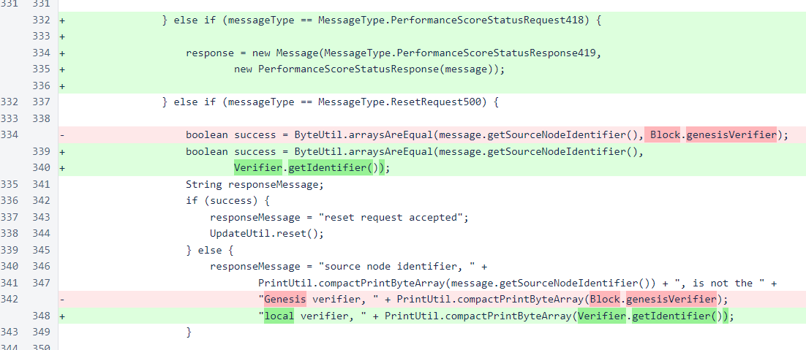
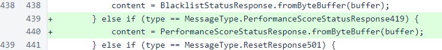
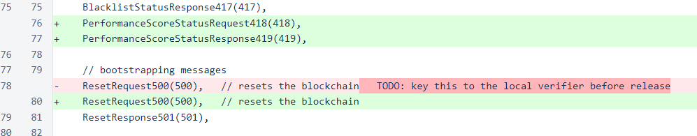
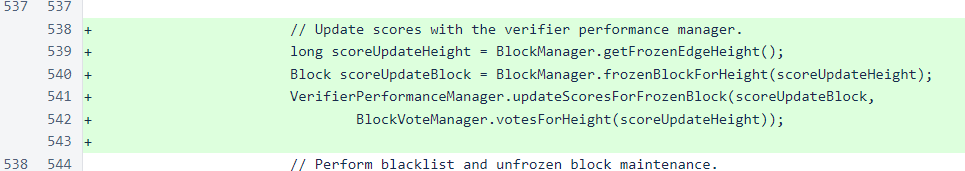
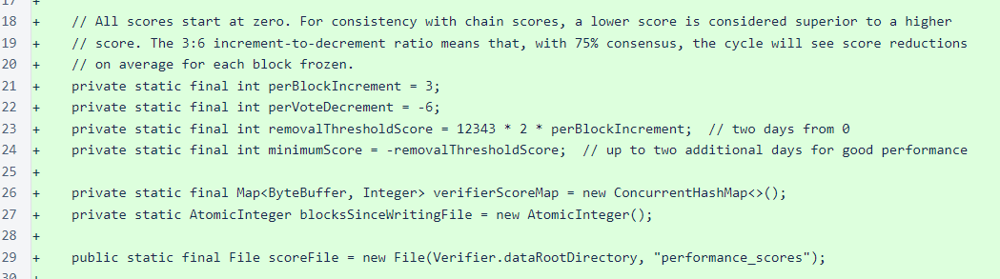
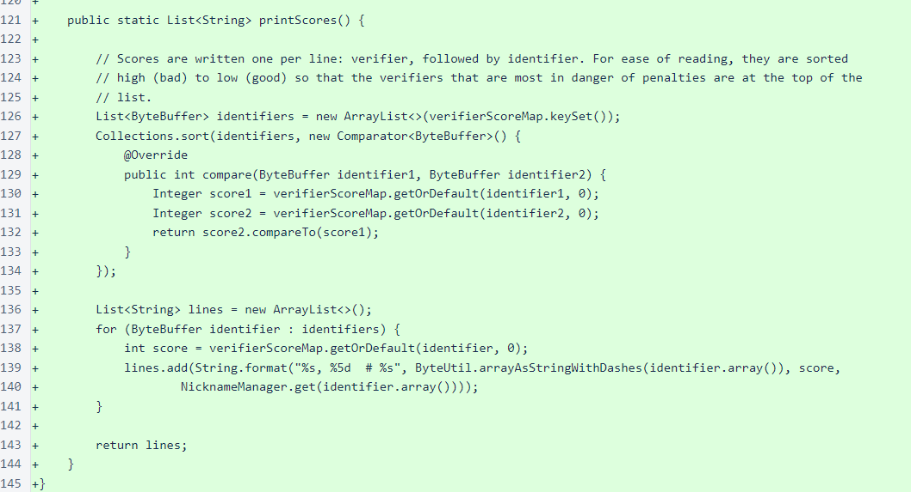
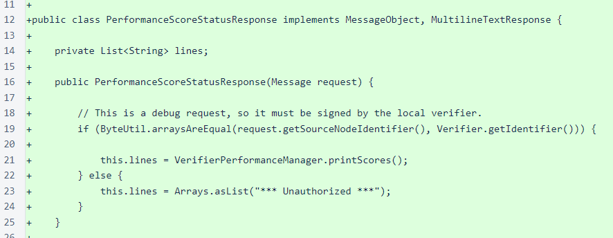
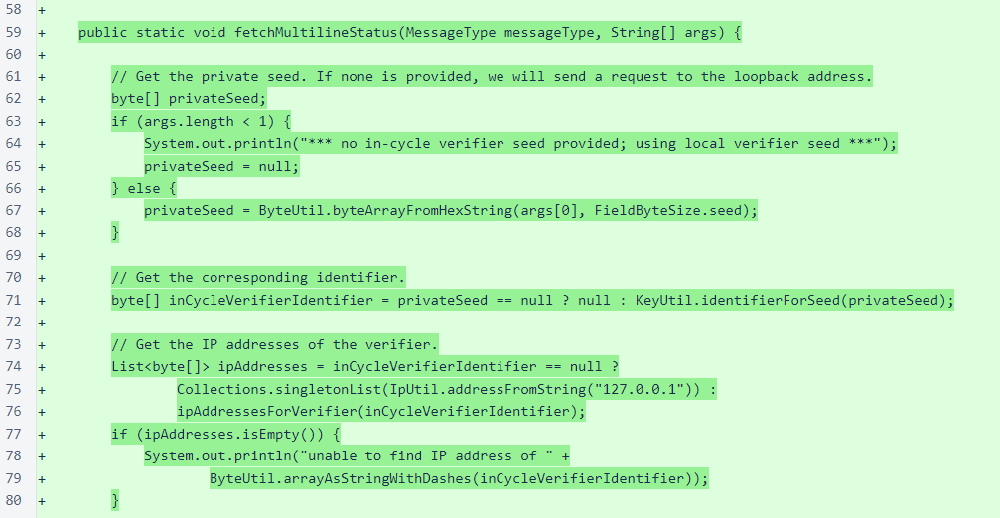

Nyzo version 505 (commit on GitHub) introduces a verifier-performance rating.
This version only affects the verifier, but it does not affect the behavior of the verifier in a significant way. Upgrading to this version is optional.
Since the introduction of the sentinel, verifiers have been able to stay in the cycle even when they have performance or stability issues. While the sentinel is a valuable tool to keep the cycle from losing verifiers, over-reliance on it can lead to performance issues for the cycle at large. A verifier scoring system is necessary to ensure that verifiers that continually under-perform to the detriment of the cycle are eventually removed from the cycle.
Due to the remarkable efforts of the community in proactively improving verifier performance, this verifier-rating system is not as urgent of a need as it seemed to be several days ago. To avoid unfairly removing verifiers that are attempting to maintain proper performance, this version does not yet use verifier- performance scores to remove under-performing verifiers from the cycle. Removal based on these performance scores will be implemented soon.
In the MeshListener class, the new PerformanceScoreStatusRequest418 message type produces a PerformanceScoreStatusResponse. Also, unrelated to verifier performance scores, the ResetRequest500 message, which resets the internal verifier state and restarts the verifier, has been changed to only respond to messages signed by the local verifier. Previously, this mechanism could be triggered by messages signed by the same private key that signed the Genesis block. It was a convenience that we used in testing, and we intended to remove it before release.
In the processContent() method of the Message class, building of the PerformanceScoreStatusResponse from byte buffers has been added. When a Nyzo message is received, the numerical type of the message is checked, and this method deserializes the object if there is one associated with the type.
In the MessageType enumeration, PerformanceScoreStatusRequest418 and PerformanceScoreStatusResponse419 have been added, and the note to change the key for the reset message has been removed.
The Verifier class updates the VerifierPerformanceManager scores each time a block is frozen.
The VerifierPerformanceManager is a simple class with a simple scoring system. Higher numerical scores indicate poorer verifier performance, and lower numerical scores indicate better verifier performance. Each time a block is frozen, the score of every verifier increases by 3. However, the score of each verifier that voted for the block that was just frozen then decreases by 6. So, if this verifier is receiving votes for at least 50% of blocks from another verifier, then the score of that other verifier will remain stable or improve on this verifier.
The printScores() method of VerifierPerformanceManager class is used for writing the score file and for the PerformanceScoreStatusResponse content. Each identifier and score are written on a single line, and a comment adds the nickname to improve readability. Scores are written from high to low, so the poorest-performing verifiers are at the top of the list.
The PerformanceScoreStatusResponse is a standard multi-line text response. As only in-cycle verifiers are scored, the size of this response is guaranteed to grow slowly.
The functionality of the ConsensusTallyStatusRequestScript has been refactored into the fetchMultilineStatus() method of ScriptUtil class. This method is used by the ConsensusTallyStatusRequestScript and the new PerformanceScoreStatusRequestScript.
These scripts work for both local and remote queries. To run the PerformanceScoreStatusRequestScript script on your verifier, ssh to the verifier, navigate to the nyzoVerifier directory, and run the following command:
sudo java -jar build/libs/nyzoVerifier-1.0.jar co.nyzo.verifier.scripts.PerformanceScoreStatusRequestScript
If you want to run the script from a system that is not an in-cycle verifier, provide the private seed of an in-cycle verifier. The script will query verifier0.nyzo.co to obtain the current mesh, and it will find your verifier in the mesh and send a self-signed message to it. The command for this is similar to the previous command:
sudo java -jar build/libs/nyzoVerifier-1.0.jar co.nyzo.verifier.scripts.PerformanceScoreStatusRequestScript [seed of in-cycle verifier]